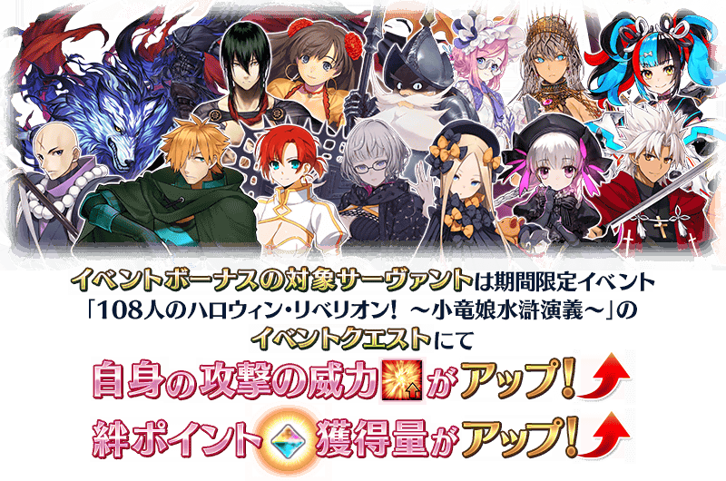

期間限定活動「108人的萬聖節・叛亂！ ～小龍娘水滸演義～」決定自2022年10月中旬開幕！
活動的參加條件為通過第2部 第5章「Lostbelt No.5 星間都市山脈 奧林帕斯 擊落神之日」。
滿足參加條件，準備好參加活動吧！
詳情敬請期待續報。
◆活動開幕預定◆
2022年10月中旬
◆活動參加條件◆
滿足以下條件的御主才能參加
・通過第2部 第5章「Lostbelt No.5 星間都市山脈 奧林帕斯 擊落神之日」
※不需要通過亞種特異點(從Ⅰ到Ⅳ)。
※在2018年12月31日(二) 23:00以後新配信的主線故事及期間限定活動、一部份關卡、宣傳活動及召喚中，會顯示隱藏真名的對象從者真名。
※本頁面皆為開發中圖片。會有與實際圖片相異的情況。

為了記念「Fate/Grand Order 迦勒底・廣播局」的放送300回，在期間中的初次登入時贈送聖晶石10個！
◆領取期間◆
2022年10月8日(六) 3:00～10月11日(二) 2:59
上述期間中，在初次登入「Fate/Grand Order」的時間點，贈予到禮物箱。
※期間內未登入的話無法領取。
※禮物只能領取1次。
◆贈送內容◆
聖晶石 10個
◆贈送對象◆
2022年10月8日(六) 2:59前通過「特異點F 炎上汙染都市 冬木」的御主對象
※上述時間前，在管理室(ターミナル)畫面的關卡橫幅必須要有「CLEAR」的文字顯示。
新從者在期間限定活動「108人的萬聖節・叛亂！ ～小龍娘水滸演義～」登場！
本次從其之中介紹1位新登場從者！

在迦勒底之門內以分天出現的關卡「蒐集種火」與「修練場」以期間限定全種開放。
◆舉辦期間◆
2022年10月7日(五) 21:00～10月28日(五) 11:59
◆對象關卡◆
・所有的「蒐集種火」關卡
・所有的「修練場」關卡
※以期間限定出現的「蒐集種火」及「修練場」會繼承「關卡情報」到平常每天輪流出現的「蒐集種火」及「修練場」關卡。 ※每日關卡的詳細如下。
【每日關卡一覧】
| 關卡名 | 可做為戰利品獲得 的主要道具 |
攻略推薦 職階 |
|---|---|---|
| 【萬聖節2022開幕前夕】 每日交替 蒐集種火<殺・槍篇> |
Assassin、Lancer、Berserker的經驗值卡 |   |
| 【萬聖節2022開幕前夕】 每日交替 蒐集種火<騎・劍篇> |
Rider、Saber、Berserker的經驗值卡 |   |
| 【萬聖節2022開幕前夕】 每日交替 蒐集種火<術・弓篇> |
Caster、Archer、Berserker的經驗值卡 |   |
| 【萬聖節2022開幕前夕】 每日交替 蒐集種火<槍・殺篇> |
Lancer、Assassin、Berserker的經驗值卡 | |
| 【萬聖節2022開幕前夕】 每日交替 蒐集種火<劍・騎篇> |
Saber、Rider、Berserker的經驗值卡 | |
| 【萬聖節2022開幕前夕】 每日交替 蒐集種火<弓・術篇> |
Archer、Caster、Berserker的經驗值卡 | |
| 【萬聖節2022開幕前夕】 每日交替 蒐集種火<隨機篇> |
Saber、Archer、Lancer、Rider、Caster、Assassin、Berserker的經驗值卡(隨機) | - |
| 【萬聖節2022開幕前夕】 每日交替 弓之修練場 |
Archer的靈基再臨用道具、Archer的技能強化素材道具 |  |
| 【萬聖節2022開幕前夕】 每日交替 槍之修練場 |
Lancer的靈基再臨用道具、Lancer的技能強化素材道具 | |
| 【萬聖節2022開幕前夕】 每日交替 狂之修練場 |
Berserker的靈基再臨用道具、Berserker的技能強化素材道具 | ALL |
| 【萬聖節2022開幕前夕】 每日交替 騎之修練場 |
Rider的靈基再臨用道具、Rider的技能強化素材道具 |  |
| 【萬聖節2022開幕前夕】 每日交替 術之修練場 |
Caster的靈基再臨用道具、Caster的技能強化素材道具 | |
| 【萬聖節2022開幕前夕】 每日交替 殺之修練場 |
Assassin的靈基再臨用道具、Assassin的技能強化素材道具 | |
| 【萬聖節2022開幕前夕】 每日交替 劍之修練場 |
Saber的靈基再臨用道具、Saber的技能強化素材道具 | |
※Berserker在所有的每日關卡皆為有效職階。
期間限定活動「108人的萬聖節・叛亂！ ～小龍娘水滸演義～」的期間中，一部份的從者在活動關卡中會得到「自身的攻擊威力提升」與「絆點數獲得量提升」的加成！
※活動加成的效果量因從者而異。

【活動加成的對象從者】
| 職階 | 稀有度 | 從者名 |
|---|---|---|
| Saber | ★★★★ | 伊莉莎白・巴托里〔Brave〕 |
| ★★★★ | 柳生但馬守宗矩 | |
| ★★★ | 弗格斯・馬克・羅伊 | |
| Archer | ★★★★★ | 清少納言 |
| ★★★★ | 潔諾比亞 | |
| ★★★ | 羅賓漢 | |
| Lancer | ★★★★ | 伊莉莎白・巴托里 |
| ★★★★ | 秦良玉 | |
| ★★★★ | 唐吉訶德 | |
| ★★★ | 寶藏院胤舜 | |
| Rider | ★★★★★ | 太公望 |
| ★★★★ | 伊莉莎白・巴托里〔灰姑娘〕 | |
| ★★★ | 布狄卡 | |
| ★★★ | 曼迪卡爾多 | |
| ★★ | 愛德華・蒂奇 | |
| Caster | ★★★★★ | 紫式部 |
| ★★★★ | 伊莉莎白・巴托里〔萬聖節〕 | |
| ★★★★ | 童謠 | |
| ★★★ | 阿維斯布隆 | |
| Assassin | ★★★★ | 燕青(新宿的Assassin) |
| ★★★ | 荊軻 | |
| ★★★ | 風魔小太郎 | |
| ★ | 瑪塔・哈里 | |
| Ruler | ★★★★★ | 天草四郎 |
| Avenger | ★★★★ | 海森・羅伯(新宿的Avenger) |
| Alterego | ★★★★ | 機械伊莉醬 |
| ★★★★ | 機械伊莉醬Ⅱ號機 | |
| Foreigner | ★★★★★ | 艾比蓋兒・威廉斯 |
| ★★★★★ | 雅克・德・莫萊 |
※就算成為對象從者也會有未在本活動的主線劇本登場的情況。 ※自10月7日(五) 21:00，在從者選擇畫面和從者強化畫面等，追加活動加成篩選器。由於是只顯示於活動活躍從者的便利功能，敬請活用。
其他還有，「Road to 7 [Lostbelt No.5 奧林帕斯]」以期間限定舉辦中！
關於詳情，請自下述橫幅確認。
■「Road to 7 [Lostbelt No.5 奧林帕斯]」詳細情報